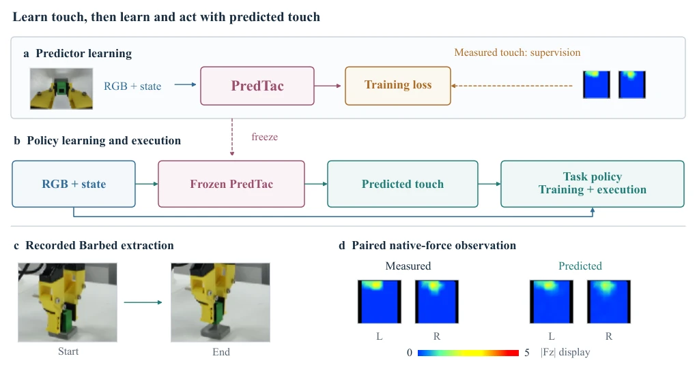
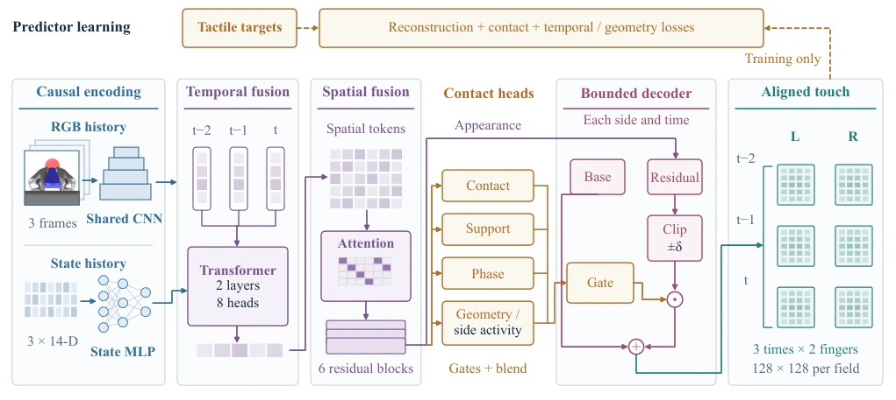
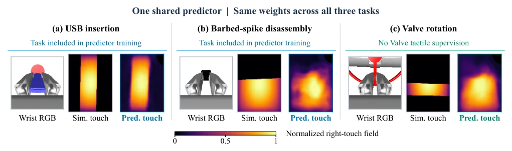
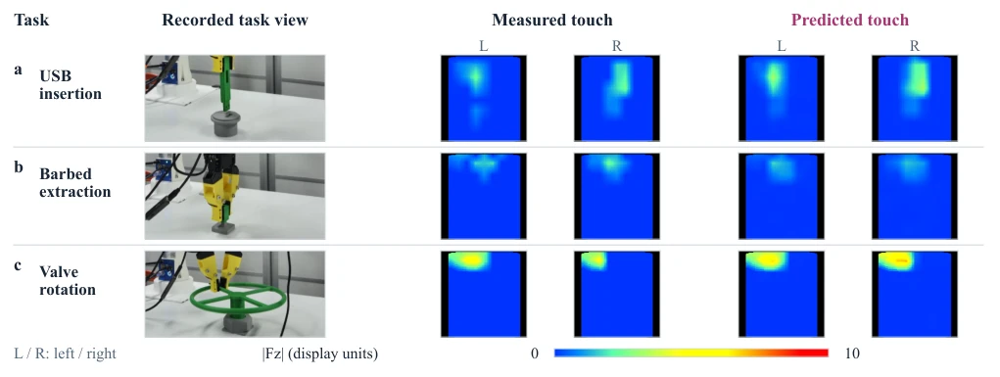

这篇论文试图用“脑补”的触觉替代昂贵的物理传感器，思路很性感。PredTac 框架在仿真和真机上验证了可行性，USB 插入成功率从视觉基线的 3.3% 飙升至 70%。但别高兴太早，预测触觉毕竟不是真触觉，论文也承认重建误差和控制收益之间没有直接等价关系。真机表现接近实测触觉（70% vs 72.2%），但仍有差距。最有趣的是干预实验，证明策略对触觉的空间结构敏感，乱序空间块会让 Valve 任务崩盘。这提醒我们，生成的触觉必须“长得像”且“分布对”，否则策略就是瞎蒙。虽然省了传感器，但增加了计算和训练成本，属于用算力换硬件的典型案例。
This paper attempts to replace expensive physical sensors with "hallucinated" tactile feedback, and the concept is highly appealing. The PredTac framework verified feasibility in simulation and on real hardware, with USB insertion success rate surging from 3.3% of the visual baseline to 70%. However, one should not rejoice too early, as predicted tactile is after all not real tactile; the paper also admits there is no direct equivalence relationship between reconstruction error and control benefit. Real hardware performance is close to measured tactile (70% vs 72.2%), but there is still a gap. Most interestingly, the intervention experiment proves the policy is sensitive to the spatial structure of tactile; scrambled spatial blocks will cause the Valve task to collapse. This reminds us that generated tactile must "look like" and be "distributionally correct", otherwise the policy is merely guessing blindly. Although sensors are saved, computing and training costs are increased, belonging to a typical case of trading compute for hardware.
Contact-rich manipulation is difficult to judge contact status relying on vision, for example, during USB insertion visual appearances are similar but contact states differ. Physical tactile sensors are good, but calibration, synchronization, and maintenance costs are high [1]. Existing work such as TacImag [9] or FELT [14] attempts to learn visual-tactile mapping, but PredTac focuses more on the role of predicted tactile as an explicit interface in policy learning. The authors question: Can contact information be learned relying only on vision and state without inputting measured tactile? This solves the pain point of hardware deployment, allowing low-cost robots to perform fine manipulation. Compared to work like [6][7] that only distills tactile knowledge, PredTac explicitly retains the tactile input channel, facilitating analysis of policy dependence on tactile content.
Overall divided into two stages: first train tactile predictor, then freeze for policy. Predictor input is causal RGB history (3 frames) and state history (3 frames), encoded via shared CNN and MLP, fused via Transformer spatiotemporal fusion. Innovation lies in structured contact conditioning (contact conditioning), predicting contact state, support, phase, etc., controlling decoder gating and mixing. Decoder adopts Base-plus-Residual structure, outputs bilateral tactile field. Loss function includes pixel reconstruction, active contact weighting, temporal consistency, and contact classification. Policy side uses ACT or ContactWorld, directly receives predicted tactile as input channel, no need for measured tactile to participate in inference. Predictor frozen after training, ensuring the policy faces prediction noise consistent with the distribution at training time.

Fig. 1. PredTac supplies predicted touch during policy learning and execution. (a) Measured touch supervises predictor learning from wrist RGB and robot-state histories. (b) The predictor is then frozen; the task policy trains and executes with predicted touch and current RGB/state. (c) Recorded start/end frames of Barbed extraction. (d) Paired measured and predicted |Fz| for left (L) and right (R) fingers at one recorded Barbed observation. Maps share the runtime spatial projection and fixed 0–5 vendor-decoded display range; native signals are tri-axial taxel forces.

Fig. 2. PredTac predicts aligned tactile fields from visual and state histories. Shared visual and state encoders feed temporal fusion and a spatial trunk. Appearance features and structured contact gates guide base-plus-bounded-residual decoding for each finger and observed time. Dashed arrows denote predictor-training supervision. The six outputs align with the three input times; they are not future forecasts. Feature tokens and field grids are schematic.
Simulation uses ContactWorld, real machine uses RealMan robotic arm. Tasks include USB insertion, Barbed extraction, Valve rotation. Evaluation metric is success rate. In simulation predicted tactile policy improves 8-13 percentage points over visual baseline, real machine reaches 70% mean, close to measured tactile's 72.2%. Ablation experiments show, removing tactile input significantly lowers performance, spatial rearrangement harms Valve task (-10.7%), proving policy relies on tactile spatial structure. Shared predictor cross-task reuse effect is limited, some task success rates drop. This indicates predicted tactile is effective, but generalization capability still has bottleneck, needs task-specific fine-tuning.

Fig. 3. One shared predictor supplies current-touch estimates across simulation tasks. Each group pairs wrist RGB, simulator right-touch, and predicted right-touch on a common [0, 1] scale. USB and Barbed-spike are included in its six-task training; Valve provides no tactile supervision to this predictor. All predictions use the same weights and no task-varying token. Cases follow the fixed median-contact episode rule, independent of prediction error and control outcomes; visible shape and extent differences illustrate the limits of reconstruction.

Fig. 4. Recorded real-robot contact across three tasks. Each row pairs external RGB and measured/predicted left/right (L/R) |Fz| from one inference record. Samples are nearest the median measured total |Fz| among valid motion-enabled observations, selected without prediction error. Maps share the runtime projection and fixed 0–10 vendor-decoded force scale. Examples do not estimate success.